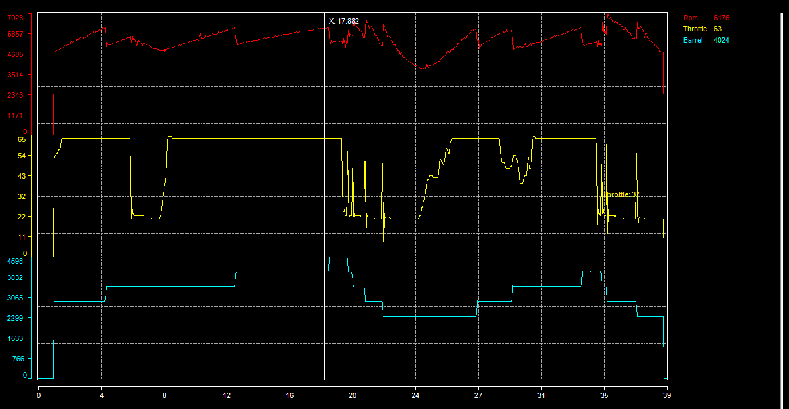

Snapshot function makes a picture of your graphic that can be reused in a presentation, or an email or anything else.
Snapshot outputs a bitmap picture file (*.bmp), this picture including legend but excluding the channel list.
To make a snapshot of your graphic, simply click the 'Make a snapshot image of the graphic' , set the name and path of the output picture in the file saving dialog and click 'Save'.
Example of a graphic snapshot.

Created with the Personal Edition of HelpNDoc: Easy EPub and documentation editor